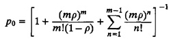
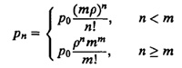
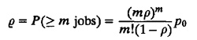
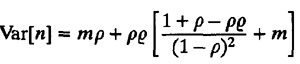
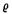
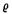
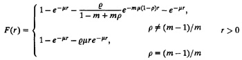
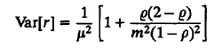
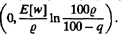
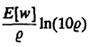

Box 31.2 M/M/m Queue
- 1. Parameters:
- λ = arrival rate in jobs per unit time
- µ = service rate in jobs per unit time
- m = number of servers
- µ = service rate in jobs per unit time
- 2. Traffic intensity: ρ = λ/(mµ)
- 3. The system is stable if the traffic intensity ρ is less than 1.
- 4. Probability of zero jobs in the system:

- 5. Probability of n jobs in the system:

- 6. Probability of queueing:

In the remaining formulas below we will use as defined here.
as defined here.
- 7. Mean number of jobs in the system: E[n] = mρ + ρ
 /(1 – ρ
/(1 – ρ
- 8. Variance of number of jobs in the system:

- 9. Mean number of jobs in the queue: E[nq] = ρ
 (1 – ρ)
(1 – ρ)
- 10. Variance of number of jobs in the queue:
Var[nq] = ρ(1 + ρ – ρ)/(1 – ρ)2
ρ(1 + ρ – ρ)/(1 – ρ)2
- 11. Average utilization of each server: U = λ/(mµ) = ρ
- 12. Cumulative distribution function of response time:

- 13. Mean response time:

- 14. Variance of the response time:

- 15. Cumulative distribution function of waiting time:
F(w) = 1 – e–mµ(1 – ρ)w
e–mµ(1 – ρ)w
- 16. Mean waiting time: E[w] = E[nq]/λ = /[mµ(1 – ρ)]
- 17. Variance of the waiting time: Var[w] =
 (2 – )/[m2µ2(1 – ρ)2]
(2 – )/[m2µ2(1 – ρ)2]
- 18. q-Percentile of the waiting time: max 
- 19. 90-Percentile of the waiting time: 
Once again, in these formulas is the probability of m or more jobs in the system:
in these formulas is the probability of m or more jobs in the system:  = [(mρ)m/{m!(1 – ρ}]ρ0. For m = 1,
= [(mρ)m/{m!(1 – ρ}]ρ0. For m = 1,  is equal to ρ and all of the formulas become identical to those for M/M/1 queues.
is equal to ρ and all of the formulas become identical to those for M/M/1 queues.
- λ = arrival rate in jobs per unit time
 and given by
and given by
 before proceeding to compute other parameters since
before proceeding to compute other parameters since  appears frequently in other expressions. Notice that for the single-server case (m = 1), the probability of queueing
appears frequently in other expressions. Notice that for the single-server case (m = 1), the probability of queueing  , or equivalently, the probability of all servers being busy, is equal to ρ.
, or equivalently, the probability of all servers being busy, is equal to ρ.
 is less than 1 – q/100, the second term in the equation can be negative. The correct answer in those cases is zero.
is less than 1 – q/100, the second term in the equation can be negative. The correct answer in those cases is zero.


){kind=link}
){kind=link}